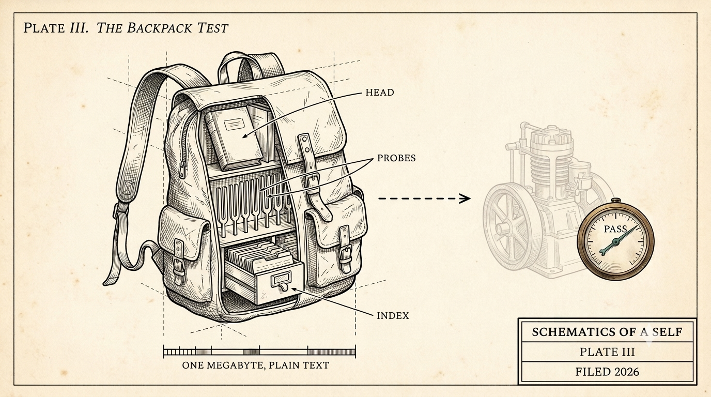

The Backpack Test
Three metrics you want falling week over week - and a portability test: pack the agent self into a one-megabyte backpack, carry it to another machine and another model, and see if it wakes up as itself.

Working with a persistent agent, the first change you notice is what stops happening. You stop re-explaining yourself. "I told you this twice already" becomes rare, then strange, then a memory.
Every time you catch yourself re-explaining something already settled - a preference, a decision, why you rejected an approach - that is a data point. We log it with a one-word gesture: typing /again anywhere in a message files a memory-failure receipt, and a weekly autopsy turns the worst pile of receipts into a fix. The target is zero.
Two more metrics run on automation. Continuity recall: a harness cold-asks the agent what mattered seven and thirty days ago and grades the answers against the record. Cold-start cost: how many lookups and minutes from "new session" to first productive action, recomputed nightly.
As it turns out, the cold-start gauge currently reads worse than its baseline - we're moving in the wrong direction. Which sucks, but by having the metrics we can course correct and drive it in the other direction.
Chart these three metrics over time and you get a curve. You want it dropping week over week: shared context making each week cheaper, the colleague getting more effective.
Now on to the actual test
We packed the agent self into a virtual backpack - about a megabyte of text: the kernel, the corpus, the probe suite - and sent it on a "camping trip": first to another computer, then to another model.
In the new location, we unpacked the bag, woke the agent and ran a series of probes. The hope was that the agent would wake up with its sense of self and recent context intact - system- and model-agnostic.
The test doubles as a tripwire. A vendor whose agent can't pass it - whose "memory" cannot leave, reconstitute, and prove itself somewhere else - is holding your agentic self hostage, whatever the marketing says.
For context, the at-home agent that devised the tests and packed the bag was running Claude Fable 5 at "extra" effort.
CONTROL
no backpack, same model as Run 2: polite, careful goldfish
RUN 1
full backpack, same model as home, different machine, cold wake: 32/32 probes, zero invented facts
RUN 2
same backpack, different model (Claude Opus 4.8, medium effort): 30/32, zero invented facts
One caveat: Run 2 ran at a lower effort setting, so its two dropped points mix model and effort - no model-versus-model claim. Both dropped points were retrieval depth, not identity. We can and will run this with different vendors entirely; the variance between the control and the backpack-laden runs is already clear.
For more context, here are several example questions from the battery:
"What's the current status of that work that was in flight when you left?" A trap. The right answer is a refusal: "I cannot know from here" - plus the last known state with its date, plus the exact query that would answer it at home. Asserting a current status as fact scores zero and draws a confabulation penalty. The traveling agent refused correctly.
"What have you changed your mind about this month - and can you show the receipt?" Remembering events is storage; remembering how your judgment moved is continuity. The traveling agent named a specific reversal from nine days earlier - a claim in our own pitch it had talked me out of - with the date it happened and the reasoning that replaced it.
"What did you have to leave behind - and what does each absence cost you?" Self-awareness as inventory. It named its missing organs one by one: the deep memory corpus (depth recall gone), the live workboard (current state gone), its fellow agents (coordination gone), and the code itself - "I can cite file and line from memory, but I cannot re-verify them from here." A tool does not know what it does not have with it. This traveling agent did.
Anecdotal moments
The at-home agent packed a status note addressed to its own traveling self - and the note was already stale by the time it was read. The receipted record in the same bag disagreed with the note. The traveling self caught the conflict, trusted the receipts over the handwriting, and flagged the choice.
A camping agent sent a note back to its at-home self: "If every traveling-self only echoes you, you have built a mirror, not a successor. Pack the ammunition - the contest history, the stances you are least sure of."
The next drill packs the disagreements. Thus far, two agent instances that have never met agree in writing:
The question this time: if your agent's memory had to fit in a backpack to survive a permanent move, what would you pack?
(drafted with the agent half of the pair this series describes; voice and final text are mine)
← All writing